Native Sparse Attention：与硬件匹配、可原生训练的稀疏 Attention
1DeepSeek-AI
2北京大学计算机学院多媒体信息处理重点实验室、PKU-Anker LLM Lab
3华盛顿大学
{yuanjy, mzhang_cs}@pku.edu.cn，{zengwangding, wenfeng.liang}@deepseek.com
摘要
长上下文建模对下一代语言模型至关重要，但标准 attention 机制的高计算成本带来了显著的计算挑战。稀疏 attention 为在维持模型能力的同时提升效率提供了一个有前景的方向。我们提出 NSA，这是一种可原生训练的稀疏 attention 机制，将算法创新与面向硬件的优化相结合，实现高效的长上下文建模。NSA 采用动态的分层稀疏策略，将粗粒度 token 压缩与细粒度 token 选择相结合，同时保留全局上下文感知能力与局部精度。我们的方法通过两项关键创新推进了稀疏 attention 的设计：（1）通过平衡算术强度的算法设计，以及针对现代硬件的实现优化，获得显著加速。（2）支持端到端训练，在不牺牲模型性能的情况下减少预训练计算量。如图 1 所示，实验表明，使用 NSA 预训练的模型在通用基准、长上下文任务和基于指令的推理上，保持或超过 Full Attention 模型的表现。同时，在长度为 64k 的序列上，NSA 在 decoding、前向传播和反向传播中均相对 Full Attention 获得显著加速，验证了它在模型整个生命周期中的效率。
1. 引言
研究界越来越认识到，长上下文建模是下一代 LLM 的一项关键能力，推动这一认识的是各种现实应用：从深入推理（DeepSeek-AI, 2025; Zelikman et al., 2022）、仓库级代码生成（Zhang et al., 2023a; Zhang et al.），到多轮自主 agent 系统（Park et al., 2023）。近期的突破包括 OpenAI 的 o 系列模型、DeepSeek-R1（DeepSeek-AI, 2025）和 Gemini 1.5 Pro（Google et al., 2024），使模型能够处理整个代码库、长篇文档，在数千个 token 上维持连贯的多轮对话，并针对长距离依赖进行复杂推理。然而，普通 attention（Vaswani et al., 2017）机制的高复杂度（Zaheer et al., 2020）随着序列长度增加，成为关键的（接原文第 2 页）
∗ 在 DeepSeek-AI 实习期间作出的贡献。
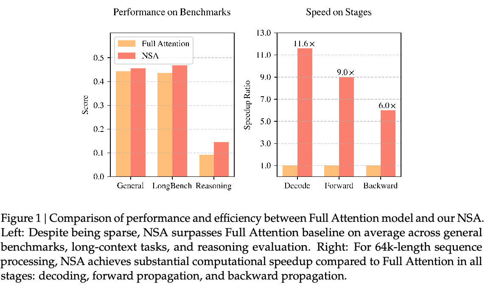
（接原文第 1 页）延迟瓶颈。
理论估算表明，在 decoding 长度为 64k 的上下文时，基于 softmax 架构的 attention 计算占总延迟的 70–80%，这凸显了对更高效 attention 机制的迫切需求。
实现高效长上下文建模的一种自然方法，是利用 softmax attention 固有的稀疏性（Ge et al., 2023; Jiang et al., 2023）：选择性地计算关键查询—键对，可以在保持性能的同时显著减少计算开销。近期进展通过多种策略展示了这一潜力：KV cache 驱逐方法（Li et al., 2024; Zhang et al., 2023b; Zhou et al., 2024）、按块选择 KV cache 的方法（Gao et al., 2024; Tang et al., 2024; Xiao et al., 2024a），以及基于采样、聚类或哈希的选择方法（Chen et al., 2024b; Desai et al., 2024; Liu et al., 2024）。尽管这些策略很有前景，现有稀疏 attention 方法在实际部署中往往仍不理想。许多方法无法获得与理论收益相称的加速；此外，大多数方法缺乏有效的训练阶段支持，无法充分利用 attention 的稀疏模式。
要解决这些局限，部署有效的稀疏 attention 必须应对两个关键挑战：（1）与硬件匹配的推理加速：要把理论计算量的减少转化为实际速度提升，必须在 prefill 和 decoding 两个阶段采用对硬件友好的算法设计，以缓解内存访问和硬件调度瓶颈；（2）考虑训练的算法设计：通过可训练算子支持端到端计算，在保持模型性能的同时降低训练成本。这些要求对于现实应用实现快速长上下文推理或训练至关重要。同时考虑这两个方面时，现有方法仍存在明显差距。
为实现更有效、更高效的稀疏 attention，我们提出 NSA，这是一种融合分层 token 建模、可原生训练的稀疏 attention 架构。如图 2 所示，NSA 通过将键和值组织为时间块，并经由三条 attention 路径处理它们，减少每个查询的计算量：压缩后的粗粒度 token、选择性保留的细粒度 token，以及用于局部上下文信息的滑动窗口。随后，（接原文第 3 页）
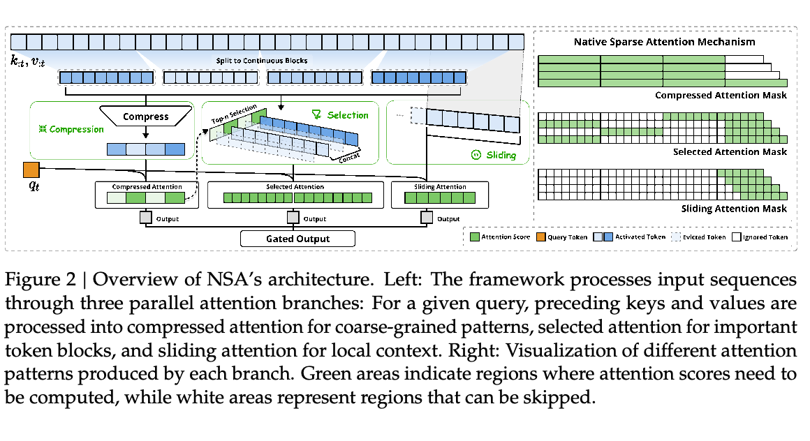
（接原文第 2 页）我们实现专门的 kernel，以最大化实际效率。
NSA 针对上述关键要求提出两项核心创新：（1）与硬件匹配的系统：针对 Tensor Core 利用和内存访问优化按块稀疏 attention，确保算术强度平衡。（2）考虑训练的设计：通过高效算法和反向算子支持稳定的端到端训练。这种优化使 NSA 能够同时支持高效部署和端到端训练。
我们在真实语言语料上，通过全面实验评估 NSA。我们在一个 27B 参数的 Transformer 主干上，使用 260B token 进行预训练，并在通用语言评测、长上下文评测和 chain-of-thought 推理评测上衡量 NSA 的性能。我们还使用经过优化的 Triton（Tillet et al., 2019）实现，在 A100 GPU 上比较 kernel 速度。实验结果表明，NSA 的表现与全 attention 基线相当或更好，同时优于现有稀疏 attention 方法。此外，相较于 Full Attention，NSA 在 decoding、前向传播和反向传播阶段均获得显著加速，而且加速比随着序列变长而增加。这些结果验证了，我们的分层稀疏 attention 设计能够有效平衡模型能力与计算效率。
2. 重新审视稀疏 Attention 方法
现代稀疏 attention 方法在降低 Transformer 模型的理论计算复杂度方面取得了显著进展。然而，大多数方法主要在推理时应用稀疏性，同时保留预训练的 Full Attention 主干，这可能引入架构偏差，限制其充分发挥稀疏 attention 的优势。在介绍我们的原生稀疏架构之前，我们从两个关键视角系统地分析这些局限。
2.1. 高效推理的假象
尽管实现了 attention 计算的稀疏性，许多方法仍无法相应地降低推理延迟，主要源于两个挑战：（接原文第 4 页）
局限于特定阶段的稀疏性。\(H_{2}O\)（Zhang et al., 2023b）等方法在自回归 decoding 期间应用稀疏性，却需要在 prefill 期间进行计算密集型预处理（例如计算 attention 图、构建索引）。相反，MInference（Jiang et al., 2024）等方法只关注 prefill 的稀疏性。这些方法无法在所有推理阶段实现加速，因为至少有一个阶段的计算成本仍与 Full Attention 相当。这种针对特定阶段的设计，降低了这些方法在由 prefill 主导的工作负载（例如图书摘要、代码补全）或由 decoding 主导的工作负载（例如长 chain-of-thought（Wei et al., 2022）推理）中的加速能力。
与先进 attention 架构不兼容。一些稀疏 attention 方法无法适应现代高效 decoding 架构，例如 Multi-Query Attention（MQA）（Shazeer, 2019）和 Grouped-Query Attention（GQA）（Ainslie et al., 2023）。这些架构通过让多个查询头共享 KV，显著缓解 decoding 期间的内存访问瓶颈。例如，在 Quest（Tang et al., 2024）等方法中，每个 attention 头独立选择自己的 KV cache 子集。尽管它在 Multi-Head Attention（MHA）模型中表现出一致的计算稀疏性和内存访问稀疏性，但在基于 GQA 等架构的模型中，情况不同：KV cache 的内存访问量对应于同一 GQA 组内所有查询头所选子集的并集。这种架构特性意味着，虽然这些方法可以减少计算操作，但所需的 KV cache 内存访问量仍然相对较高。这一局限迫使我们面对一个关键选择：尽管一些稀疏 attention 方法减少了计算，它们分散的内存访问模式却与先进架构的高效内存访问设计相冲突。
这些局限源于：现有许多稀疏 attention 方法关注减少 KV cache 或理论计算量，却难以在先进框架或后端中显著降低延迟。这促使我们开发同时结合先进架构与硬件高效实现的算法，以充分利用稀疏性提高模型效率。
2.2. 可训练稀疏性的误区
我们对原生可训练稀疏 attention 的追求，受到分析仅用于推理的方法时获得的两项关键认识推动：（1）性能下降：事后施加稀疏性，迫使模型偏离其预训练优化轨迹。Chen et al.（2024b）表明，前 20% 的 attention 只能覆盖 attention 分数总量的 70%，这使预训练模型中诸如检索头之类的结构，在推理时容易受到剪枝影响。（2）训练效率需求：高效处理长序列训练，对于现代 LLM 开发至关重要。这既包括在更长文档上预训练以增强模型能力，也包括之后的适配阶段，例如长上下文微调与强化学习。然而，现有稀疏 attention 方法主要针对推理，训练中的计算挑战在很大程度上仍未得到解决。这一局限阻碍了通过高效训练开发更强的长上下文模型。此外，将现有稀疏 attention 适配到训练的尝试，也暴露了以下挑战：
不可训练组件。ClusterKV（Liu et al., 2024）中的离散操作（包括 k-means 聚类）和 MagicPIG（Chen et al., 2024b）中的离散操作（包括基于 SimHash 的选择），在计算图中产生不连续性。这些不可训练组件阻止 gradient 流经 token 选择过程，限制了模型学习最优稀疏模式的能力。
低效的反向传播。一些理论上可训练的稀疏 attention 方法，在实际训练中效率不佳，（接原文第 5 页）
（接原文第 4 页）例如 HashAttention（Desai et al., 2024）等方法采用的 token 粒度选择策略，导致 attention 计算时需要从 KV cache 中加载大量独立 token。
这种非连续内存访问阻碍了对 FlashAttention 等快速 attention 技术的高效适配；这些技术依靠连续内存访问和按块计算实现高吞吐量。因此，实现不得不退回到低硬件利用率的方式，显著降低训练效率。
2.3. 原生稀疏性势在必行
推理效率与训练可行性方面的这些局限，促使我们从根本上重新设计稀疏 attention 机制。我们提出 NSA，一种原生稀疏 attention 框架，同时满足计算效率与训练需求。以下各节详细介绍 NSA 的算法设计与算子实现。
3. 方法
我们的技术方法涵盖算法设计与 kernel 优化。在以下小节中，我们首先介绍方法的背景，然后给出 NSA 的整体框架及其关键算法组件。最后，我们详细介绍针对硬件优化的 kernel 设计，以最大化实际效率。
3.1. 背景
Attention 机制广泛用于语言建模：每个查询 token \(q_{t}\) 计算与其之前所有键 \(k_{:t}\) 的相关性分数，生成值 \(v_{:t}\) 的加权和。形式上，对于长度为 \(t\) 的输入序列，attention 操作定义为：
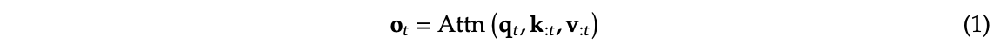
其中，Attn 表示 attention 函数：
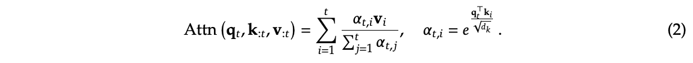
这里，\(\alpha _{t,i}\) 表示 \(q_{t}\) 和 \(k_{i}\) 之间的 attention 权重，\(d_{k}\) 是键的特征维度。随着序列长度增加，attention 计算越来越主导总体计算成本，为长上下文处理带来显著挑战。
算术强度是计算操作量与内存访问量的比值，它从根本上决定硬件上的算法优化方式。每个 GPU 都有一个由峰值计算能力和内存带宽决定的临界算术强度，计算方式为这两个硬件上限之比。对于计算任务，高于这一临界阈值的算术强度会使任务受计算限制（受 GPU FLOPS 限制），而低于阈值则会使任务受内存限制（受内存带宽限制）。
具体而言，对于因果 self-attention 机制，在训练和 prefill 阶段，batch 矩阵乘法与 attention 计算表现出高算术强度，使这些阶段在现代加速器上受计算限制。相反，自回归 decoding 每次前向传播只生成一个 token，却需要加载整个 KV cache，因而算术强度较低，受到内存带宽限制。（接原文第 6 页）
这带来了不同的优化目标：在训练和 prefill 时减少计算成本，而在 decoding 时减少内存访问。
3.2. 整体框架
为发挥 attention 自然稀疏模式的潜力，我们提出：对于每个给定查询 \(q_{t}\)，用一组更紧凑、信息密度更高的表示键值对 \(\tilde{K}_{t}\)、\(\tilde{V}_{t}\)，替换公式（1）中的原始键值对 \(k_{:t}\)、\(v_{:t}\)。具体而言，优化后的 attention 输出形式化定义如下：
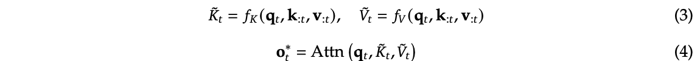
其中，\(\tilde{K}_{t}\)、\(\tilde{V}_{t}\) 根据当前查询 \(q_{t}\) 和上下文记忆 \(k_{:t}\)、\(v_{:t}\) 动态构造。我们可以设计各种映射策略，得到不同类别的 \(\tilde{K}_{t}^{c}\)、\(\tilde{V}_{t}^{c}\)，并按如下方式组合：
如图 2 所示，NSA 有三种映射策略 \(C = \{cmp, slc, win\}\)，分别表示对键和值进行压缩、选择和滑动窗口处理。\(g_{t}^{c} \in [0,1]\) 是对应策略 \(c\) 的门控分数，通过 MLP 和 sigmoid 激活从输入特征中得到。用 \(N_{t}\) 表示重新映射后的键／值总数：
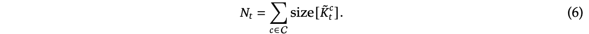
通过确保 \(N_{t} \ll t\)，我们保持较高的稀疏比例。
3.3. 算法设计
本小节介绍我们的重新映射策略 \(f_{K}\) 和 \(f_{V}\) 的设计：token 压缩、token 选择以及滑动窗口。
3.3.1. Token 压缩
通过将连续的键或值块聚合为块级表示，我们得到能够捕获整个块信息的压缩键和值。形式上，压缩键表示定义为：
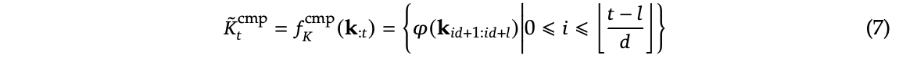
其中，\(l\) 是块长，\(d\) 是相邻块之间的滑动步长，\(\varphi\) 是具有块内位置编码的可学习 MLP，用于将块中的键映射成单个压缩键。\(\tilde{K}_{t}^{cmp} \in \mathbb{R} ^{d_{k}\times \lfloor (t-l)/d\rfloor}\) 是由压缩键组成的张量。通常，我们采用 \(d < l\)，以缓解信息碎片化。压缩值表示 \(\tilde{V}_{t}^{cmp}\) 也具有类似形式。压缩表示捕获更粗粒度、更高层次的语义信息，并减轻 attention 的计算负担。
3.3.2. Token 选择
仅使用压缩键和值可能会丢失重要的细粒度信息，因此我们选择性地保留单独的键和值。下面介绍我们的高效 token 选择机制，它以较低计算开销识别并保留最相关的 token。
按块选择。我们的选择策略以空间连续块的形式处理键和值序列，其动机来自两个关键因素：硬件效率方面的考虑，以及 attention 分数固有的分布模式。按块选择对于在现代 GPU 上实现高效计算至关重要。这是因为，与基于随机索引的读取相比，现代 GPU 架构对连续块访问表现出显著更高的吞吐量。此外，按块计算能够最优地利用 Tensor Core。这一架构特性使按块内存访问与计算成为高性能 attention 实现的基本原则，FlashAttention 的分块设计便是例证。按块选择也遵循 attention 分数的固有分布模式。已有工作（Jiang et al., 2024）表明，attention 分数经常表现出空间连续性，说明相邻的键往往具有相似的重要程度。第 6.2 节的可视化也展示了这种空间连续模式。
为实现按块选择，我们首先将键和值序列划分为选择块。为识别用于 attention 计算的最重要块，需要为每个块赋予重要性分数。下面介绍计算这些块级重要性分数的方法。
重要性分数计算。计算块重要性分数可能引入显著开销。幸运的是，压缩 token 的 attention 计算产生了中间 attention 分数，我们可以利用它们推导选择块的重要性分数，形式如下：
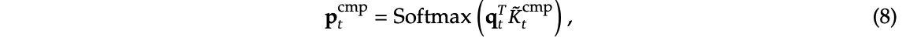
其中，\(p_{t}^{cmp} \in \mathbb{R} ^{\lfloor (t-l)/d\rfloor +1}\) 是 \(q_{t}\) 与压缩键 \(\tilde{K}_{t}^{cmp}\) 之间的 attention 分数。用 l′ 表示选择块大小。当压缩块和选择块采用相同的分块方式，即 \(l' = l = d\) 时，可直接令 \(p_{t}^{slc} = p_{t}^{cmp}\)，得到选择块重要性分数。对于分块方式不同的情况，我们根据两者的空间关系推导选择块的重要性分数。在 \(l \le l'\)、d | l 且 d | l′ 的条件下，有：
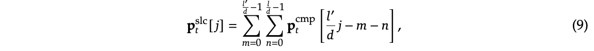
其中，[·] 表示访问向量元素的索引算子。对于采用 GQA 或 MQA、在查询头之间共享 KV cache 的模型，必须确保这些头之间的块选择一致，以最小化 decoding 时的 KV cache 加载。组内各头共享的重要性分数形式化定义为：
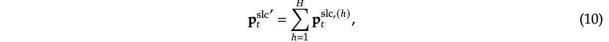
其中，上标 (h) 表示头索引，\(H\) 是每组中的查询头数。这种聚合确保同一组内各头的块选择一致。
Top-n 块选择。获得选择块重要性分数后，我们保留按块重要性分数排序的前 \(n\) 个稀疏块中的 token，形式如下：
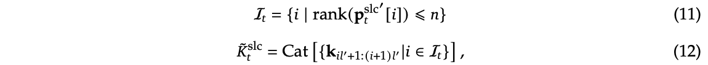
其中，rank(·) 表示降序排列中的名次，\(rank = 1\) 对应最高分数；\(I_{t}\) 是选中块的索引集合；Cat 表示拼接操作。\(\tilde{K}_{t}^{slc} \in \mathbb{R} ^{d_{k}\times nl'}\) 是由压缩键组成的张量。细粒度值 \(\tilde{V}_{t}^{slc}\) 也适用类似形式。随后，选中的键和值按照公式（5），与 \(q_{t}\) 一同参与 attention 计算。
3.3.3. 滑动窗口
在 attention 机制中，局部模式通常适应得更快，并可能主导学习过程，从而潜在地妨碍模型从压缩和选择 token 中有效学习。为解决这一问题，我们引入一个专门的滑动窗口分支，显式处理局部上下文，使其他分支（压缩和选择）能够专注于学习各自的特征，而不被局部模式所形成的捷径替代。具体而言，我们在窗口 \(w\) 内保留近期 token：\(\tilde{K}_{t}^{win} = k_{t-w:t}\)、\(\tilde{V}_{t}^{win} = v_{t-w:t}\)，并将不同信息来源（压缩 token、选中的 token、滑动窗口）的 attention 计算隔离到独立分支。随后，通过可学习的门控机制聚合这些分支输出。为在仅增加少量计算开销的情况下进一步防止 attention 分支之间的捷径学习，我们为三个分支提供独立的键和值。这种架构设计通过防止局部与长距离模式识别之间的 gradient 干扰，实现稳定学习，同时只引入极小开销。
获得全部三类键和值（\(\tilde{K}_{t}^{cmp}\)、\(\tilde{V}_{t}^{cmp}\)；\(\tilde{K}_{t}^{slc}\)、\(\tilde{V}_{t}^{slc}\)；以及 \(\tilde{K}_{t}^{win}\)、\(\tilde{V}_{t}^{win}\)）后，我们按照公式（5）计算最终 attention 输出。结合上述压缩、选择和滑动窗口机制，这构成了 NSA 的完整算法框架。
3.4. Kernel 设计
为在训练和 prefill 期间实现 FlashAttention 级别的加速，我们基于 Triton 实现了与硬件匹配的稀疏 attention kernel。由于 MHA 内存开销高且 decoding 效率低，我们遵循当前最先进的 LLM，关注 GQA 和 MQA 等共享 KV cache 的架构。压缩与滑动窗口 attention 计算可以直接兼容现有 FlashAttention-2 kernel，而对于稀疏选择 attention，我们引入专门的 kernel 设计。如果沿用 FlashAttention 的策略，将时间上连续的查询块加载到 SRAM 中，会导致低效内存访问，因为块内查询可能需要互不相交的 KV 块。为此，我们的关键优化在于采用不同的查询分组策略：对于查询序列中的每个位置，将一个 GQA 组内的全部查询头（它们共享相同的稀疏 KV 块）加载到 SRAM。图 3 展示了我们的前向传播实现。所提出的 kernel 架构具有以下关键特征：
- 以组为中心的数据加载。对于每个内层循环，加载组内位于位置 \(t\) 的所有头的查询 \(Q \in \mathbb{R} ^{[h,d_{k}]}\)，以及它们共享的稀疏键／值块索引 \(I_{t}\)。
- 共享 KV 获取。在内层循环中，将 \(I_{t}\) 索引的连续键／值块顺序加载到 SRAM，形成 \(K \in \mathbb{R} ^{[B_{k},d_{k}]}\)、\(V \in \mathbb{R} ^{[B_{k},d_{v}]}\)，以最小化内存加载；其中 \(B_{k}\) 是满足 \(B_{k} | l'\) 的 kernel 块大小。
- 网格上的外层循环。由于对于不同查询块，内层循环长度（与选中块数 \(n\) 成正比）几乎相同，我们将查询／输出循环放入 Triton 的网格调度器，以简化并优化 kernel。
这一设计通过（1）按组共享，消除冗余 KV 传输；以及（2）平衡 GPU 流式多处理器之间的计算工作负载，达到接近最优的算术强度。
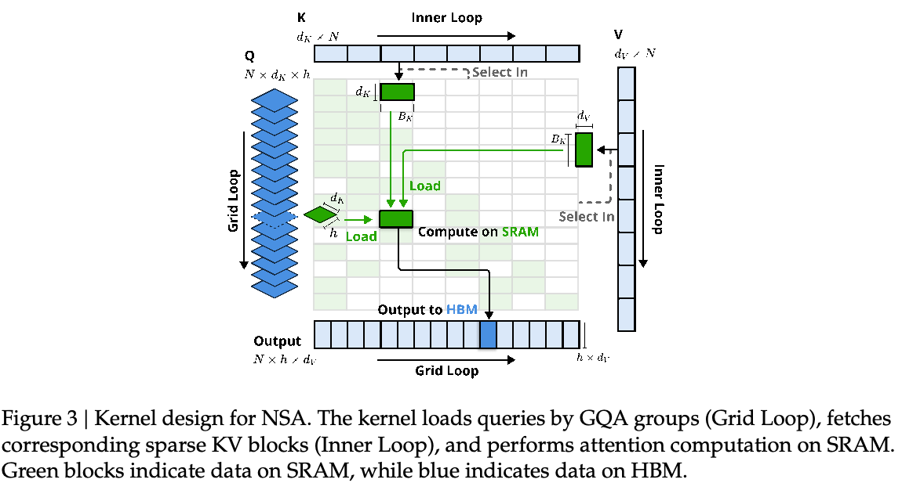
4. 实验
我们从三个视角评估 NSA：（1）通用基准性能，（2）长上下文基准性能，以及（3）chain-of-thought 推理性能，并与 Full Attention 基线及最先进的稀疏 attention 方法比较。我们将稀疏计算范式的效率分析放在第 5 节，在那里详细讨论训练和推理速度。
4.1. 预训练配置
遵循最先进 LLM 的常见做法，我们的实验采用结合 Grouped-Query Attention（GQA）与 Mixture-of-Experts（MoE）的主干，总参数为 27B，激活参数为 3B。模型包含 30 层，隐藏维度为 2560。对于 GQA，我们将组数设为 4，总 attention 头数为 64。每个头的查询、键和值的隐藏维度分别配置为 \(d_{q} = d_{k} = 192\) 和 \(d_{v} = 128\)。对于 MoE，我们采用 DeepSeekMoE（Dai et al., 2024; DeepSeek-AI, 2024）结构，包含 72 个路由专家和 2 个共享专家，并将 Top-k 专家数设为 6。为确保训练稳定性，第一层中的 MoE 被替换为 SwiGLU 形式的 MLP。（接原文第 10 页）
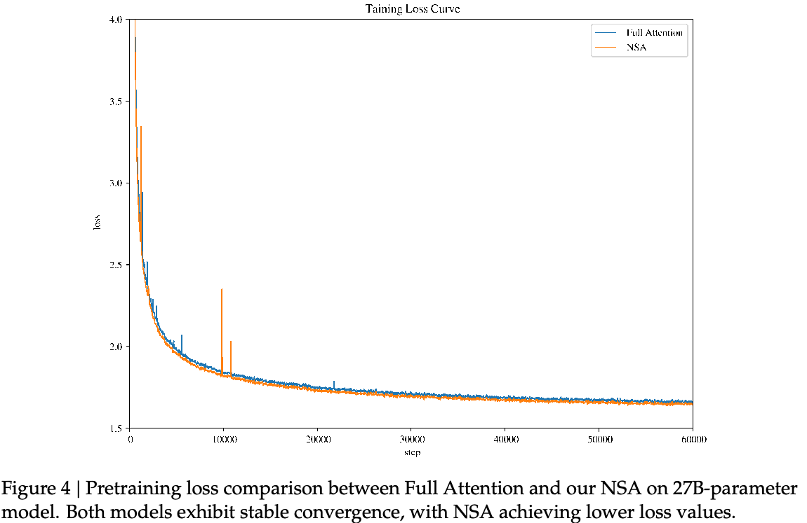
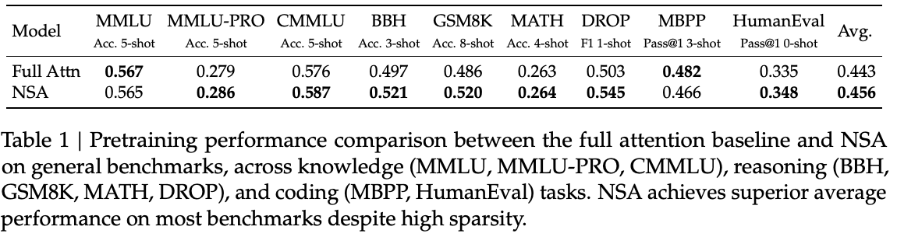
所提出的架构在计算成本与模型性能之间实现了有效权衡。对于 NSA，我们将压缩块大小设为 \(l = 32\)，滑动步长 \(d = 16\)，选中块大小 \(l' = 64\)，选中块数 \(n = 16\)（其中固定激活 1 个初始块和 2 个局部块），滑动窗口大小 \(w = 512\)。Full Attention 与稀疏 attention 模型均在 270B 个、长度为 8k 的文本 token 上预训练，随后使用 YaRN（Peng et al., 2024），在长度为 32k 的文本上继续训练并进行 SFT，以实现长上下文适配。两个模型均训练至完全收敛，以确保公平比较。如图 4 所示，我们的 NSA 与 Full Attention 基线的预训练损失曲线都稳定、平滑地下降，NSA 始终优于 Full Attention 模型。
4.2. 基线方法
除了与 Full Attention 比较，我们还评估若干最先进的推理阶段稀疏 attention 方法：\(H_{2}O\)（Zhang et al., 2023b）、InfLLM（Xiao et al., 2024a）、Quest（Tang et al., 2024），以及 Exact-Top。Exact-Top 首先计算完整 attention 分数，选择对应每个查询的分数最高的前 \(n\) 个键，再在这些位置计算 attention。这些（接原文第 11 页）
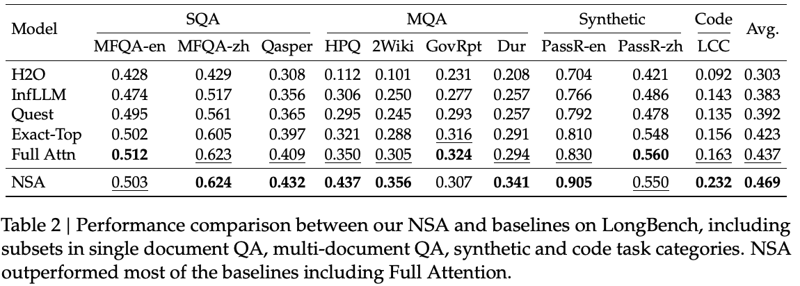
（接原文第 10 页）方法涵盖多种稀疏 attention 范式，包括 KV cache 驱逐、感知查询的选择，以及精确的 Top-n 稀疏选择。
对于通用评测，大多数样本的长度处于稀疏 attention 基线的局部上下文窗口以内，这些方法实际上等同于 Full Attention。因此，在这一配置下，我们只展示 NSA 与 Full Attention 基线的比较结果。在长上下文评测中，我们与所有基线方法进行比较，并将全部稀疏 attention 方法的稀疏度设为相同，以确保公平比较。对于需要长文本 SFT 的 chain-of-thought 推理评测，由于稀疏 attention 基线不支持训练，我们仅与 Full Attention 比较。
4.3. 性能比较
通用评测。我们在涵盖知识、推理与代码能力的全面基准集合上，评估预训练后的 NSA 和 Full Attention 基线，包括 MMLU（Hendrycks et al., 2020）、MMLU-PRO（Wang et al., 2024）、CMMLU（Li et al., 2023）、BBH（Suzgun et al., 2022）、GSM8K（Cobbe et al., 2021）、MATH（Hendrycks et al., 2020）、DROP（Dua et al., 2019）、MBPP（Austin et al., 2021）和 HumanEval（Chen et al., 2021）。结果见表 1。尽管具有稀疏性，NSA 的总体表现更好，在 9 项指标中的 7 项上优于包括 Full Attention 在内的全部基线。这说明，尽管 NSA 在较短序列上可能无法充分发挥其效率优势，它仍然表现强劲。值得关注的是，NSA 在推理相关基准上取得显著提升（DROP：+0.042，GSM8K：+0.034），表明我们的预训练帮助模型形成了专门化的 attention 机制。这种稀疏 attention 预训练机制迫使模型聚焦最重要的信息，可能通过过滤无关 attention 路径中的噪声来提高性能。在多种评测中保持一致表现，也验证了 NSA 作为通用架构的稳健性。
长上下文评测。如图 5 所示，在上下文长度为 64k 的 Needle-in-a-Haystack（Kamradt, 2023）测试中，NSA 在所有位置均实现完美的检索准确率。这一表现源于我们的分层稀疏 attention 设计：它结合压缩 token 以高效扫描全局上下文，以及选择 token 以精确检索局部信息。粗粒度压缩以低计算成本识别相关上下文块，而对选中 token 进行 token 级 attention，确保保留关键的细粒度信息。这一设计使 NSA 能够同时保持全局感知与局部精度。
我们还在 LongBench（Bai et al., 2023）上，将 NSA 与最先进的稀疏 attention（接原文第 12 页）
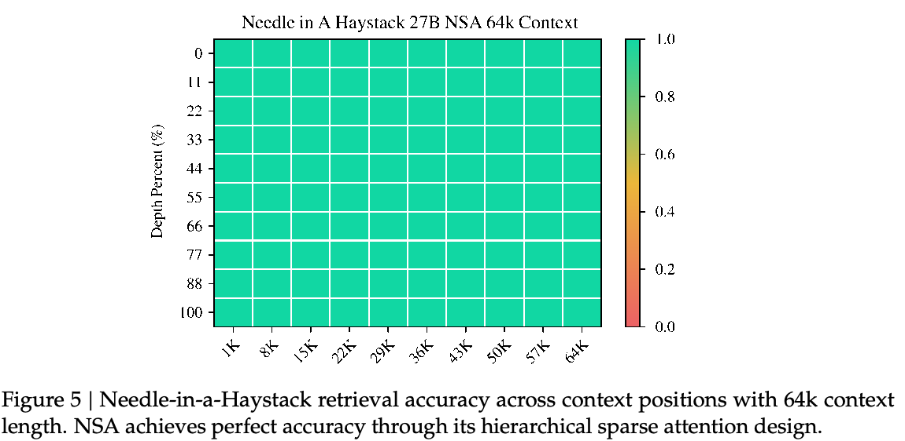
（接原文第 11 页）方法和 Full Attention 基线比较。
为确保稀疏度一致，我们将所有稀疏 attention 基线中每个查询激活的 token 数设为 2560，这对应于 NSA 处理长度为 32k 的序列时平均激活的 token 数。遵循 Stream-LLM（Xiao et al., 2023），这一 token 预算包含开头的 128 个 token 和 512 个局部 token。我们排除了 LongBench 中某些子集，因为这些子集上所有模型的分数都较低，可能无法提供有意义的比较。如表 2 所示，NSA 获得最高平均分 0.469，超过全部基线（比 Full Attention 高 0.032，比 Exact-Top 高 0.046）。这一提升来自两项关键创新：（1）我们的原生稀疏 attention 设计支持在预训练时对稀疏模式进行端到端优化，促进稀疏 attention 模块与其他模型组件之间同步适配；（2）分层稀疏 attention 机制实现局部与全局信息处理之间的平衡。
NSA 在需要对长上下文进行复杂推理的任务上表现尤其出色：在多跳问答任务 HPQ 和 2Wiki 上分别比 Full Attention 提升 0.087 和 0.051，在代码理解上超过基线（LCC：+0.069），并在段落检索上优于其他方法（PassR-en：+0.075）。这些结果验证了 NSA 处理各种长上下文挑战的能力，其原生预训练的稀疏 attention 在学习适合任务的最优模式方面提供了额外收益。
Chain-of-thought 推理评测。为评估 NSA 与先进下游训练范式的兼容性，我们研究其通过后训练获得 chain-of-thought 数学推理能力的容量。鉴于强化学习在较小规模模型上的效果有限，我们采用来自 DeepSeek-R1 的知识蒸馏，用 10B 个、长度为 32k 的数学推理轨迹 token 进行 SFT。由此得到两个可比较模型：Full Attention-R（Full Attention 基线）和 NSA-R（我们的稀疏变体）。我们在具有挑战性的美国数学邀请赛 AIME 24 基准上评估两个模型。我们使用采样温度 0.7 和 top-p 值 0.95，为每个问题生成 16 个回答，并获得平均分。为验证推理深度的影响，我们在两个生成上下文上限（8k 和 16k token）下进行实验，衡量延长推理链是否能提高准确率。模型预测的对照示例见附录 A。
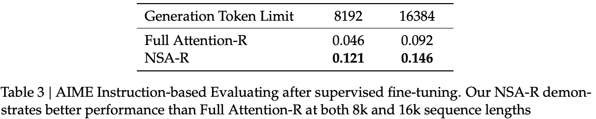
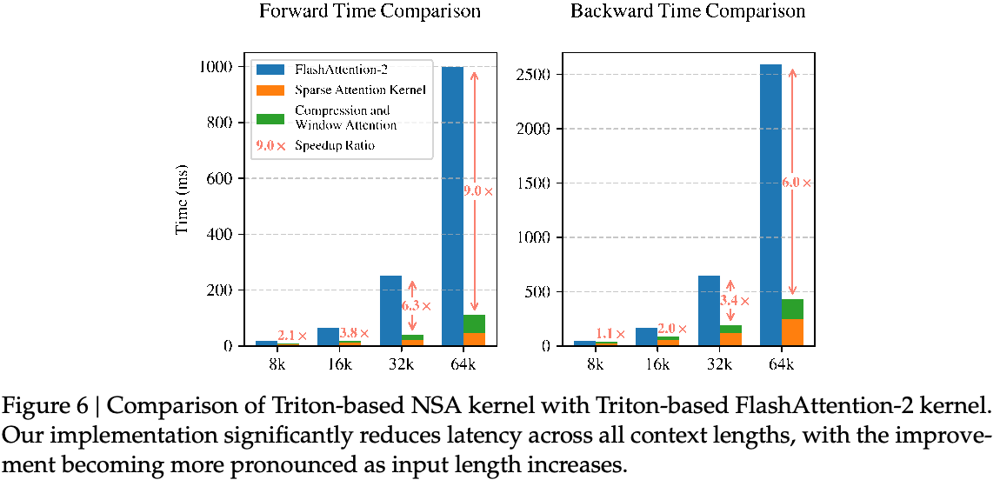
如表 3 所示，NSA-R 在 8k 上下文配置下实现显著高于 Full Attention-R 的准确率（+0.075），且这一优势在 16k 上下文下仍然存在（+0.054）。这些结果验证了原生稀疏 attention 的两个关键益处：（1）预训练的稀疏 attention 模式能够高效捕获长距离逻辑依赖，这对复杂数学推导至关重要；（2）我们的架构与硬件匹配的设计，维持足够的上下文密度，以支持推理深度增长而不发生灾难性遗忘。在不同上下文长度上持续优于基线，证实了当稀疏 attention 原生集成到训练流程时，它适用于先进推理任务。
5. 效率分析
我们在一套包含 8 个 A100 GPU 的系统上，评估 NSA 相对于 Full Attention 的计算效率。在效率分析中，模型同样配置为 GQA 组数 \(g = 4\)、每组头数 \(h = 16\)、查询／键维度 \(d_{k} = 192\)，以及值维度 \(d_{v} = 128\)。遵循第 4 节中的相同设置，我们将 NSA 压缩块大小设为 \(l = 32\)、滑动步长 \(d = 16\)、选中块大小 \(l' = 64\)、选中块数 \(n = 16\)，以及滑动窗口大小 \(w = 512\)。
5.1. 训练速度
我们将基于 Triton 的 NSA attention 实现，与使用 Triton 版 FlashAttention-2 的 Full Attention 实现比较，以确保在相同后端上公平比较速度。如图 6 所示，随着上下文长度增加，NSA 的加速幅度持续增大，在 64k 上下文长度下，前向传播最高加速 9.0 倍，反向传播最高加速 6.0 倍。速度优势在更长序列上更为明显。这一加速源于我们（接原文第 14 页）
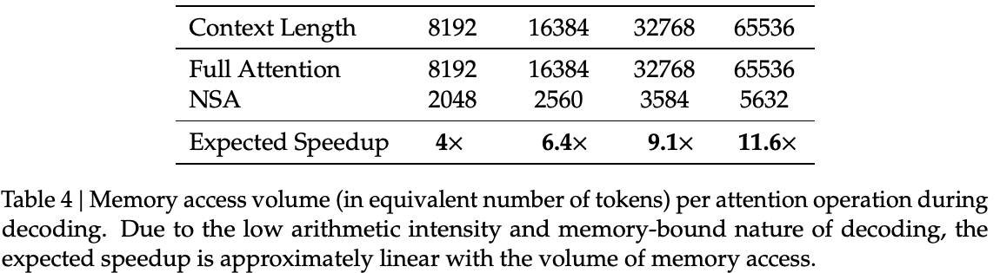
（接原文第 13 页）与硬件匹配的算法设计，以最大化稀疏 attention 架构的效率：
（1）按块内存访问模式通过合并加载最大化 Tensor Core 利用率；（2）kernel 中精心设计的循环调度消除了冗余 KV 传输。
5.2. Decoding 速度
Attention 的 decoding 速度主要由内存访问瓶颈决定，而这一瓶颈与 KV cache 的加载量紧密相关。在每一步 decoding 中，NSA 最多只需加载 \(\lfloor (s-l)/d\rfloor\) 个压缩 token、nl′ 个选中 token，以及 \(w\) 个相邻 token，其中 \(s\) 是缓存的序列长度。如表 4 所示，随着 decoding 长度增加，我们的方法显著降低延迟，在 64k 上下文长度下最高实现 11.6 倍加速。这种内存访问效率方面的优势也会随着序列变长而放大。
6. 讨论
本节回顾 NSA 的开发过程，并讨论探索不同稀疏 attention 策略所获得的关键认识。虽然我们的方法表现出有前景的结果，但理解其他策略面临的挑战并分析 attention 模式，能为未来研究方向提供有价值的背景。我们首先考察其他 token 选择策略存在的挑战，这些挑战推动了我们的设计选择；随后通过可视化展示 attention 分布模式。
6.1. 其他 Token 选择策略的挑战
在设计 NSA 之前，我们探索了将现有稀疏 attention 方法适配到训练阶段。然而，这些尝试遭遇各种挑战，促使我们设计一种不同的稀疏 attention 架构：
基于键聚类的策略。我们考察了 ClusterKV（Liu et al., 2024）等基于聚类的策略。这些方法将同一簇中的键和值存储在连续内存区域中。虽然理论上可用于训练和推理，但它们面临三个显著挑战：（1）动态聚类机制引入不容忽视的计算开销；（2）簇间不平衡加剧算子优化困难，尤其在 MoE 系统中，EP 组执行时间的偏斜导致持续的负载不均衡；（3）强制周期性重新聚类与按块顺序训练协议的需求，带来实现约束。这些因素共同造成重大瓶颈，显著限制其在实际部署中的有效性。
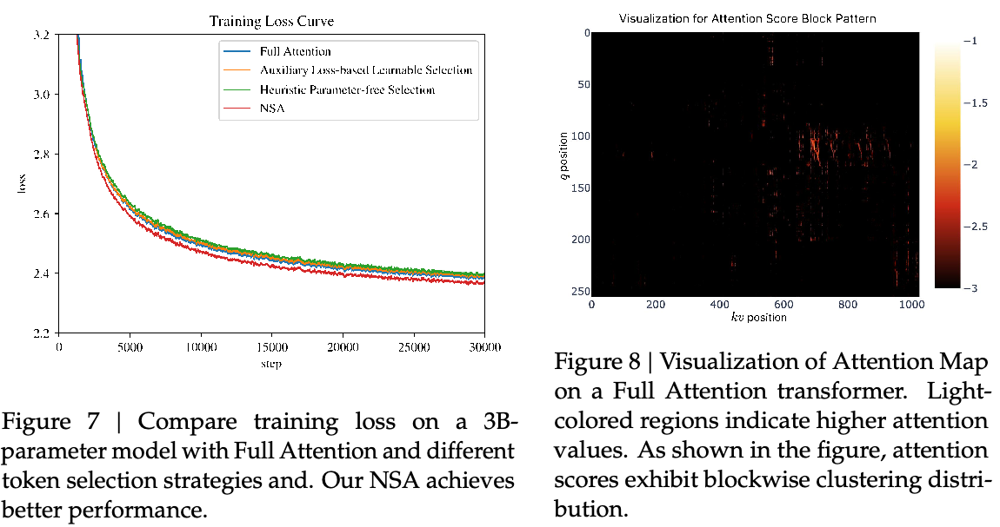
其他按块选择策略。我们还考虑了不同于 NSA 的按块键／值选择策略，例如 Quest（Tang et al., 2024）和 InfLLM（Xiao et al., 2024a）。这些方法依靠为每个 KV 块计算重要性分数，并根据与 \(q_{t}\) 的相似度选择前 \(n\) 个块。然而，现有方法面临两个关键问题：（1）由于选择操作不可微，基于神经网络的重要性分数计算依赖辅助损失，增加算子开销，而且常常降低模型性能；（2）启发式、无参数的重要性分数计算策略召回率较低，导致次优性能。我们在具有相似架构的 3B 参数模型上评估两种方法，并将它们的损失曲线与 NSA 和 Full Attention 比较。对于基于辅助损失的选择方法，我们为每个 token 引入额外查询，并为每个块引入代表性键，以估计块重要性分数。我们通过对每个键块内的 attention 分数进行平均池化，计算块级监督信号，并用 KL 散度监督块重要性预测。我们保持单独查询的粒度，而不是对查询进行块平均，以适配高效 decoding。这种基于辅助损失的重要性估计，在概念上与 SeerAttention（Gao et al., 2024）相似。对于启发式无参数选择方法，我们遵循 Quest 的策略，直接使用查询与键块逐坐标最小值／最大值之间的乘积进行选择，不引入额外参数。我们还探索了一种冷启动训练方法：最初 1000 步应用 Full Attention，随后转向启发式按块选择。如图 7 所示，两种方法的损失表现均较差。
6.2. 可视化
为探索 Transformer attention 分布中的潜在模式，并为设计寻找灵感，我们在图 8 中可视化了预训练的 27B Full Attention 模型的 attention 图。可视化揭示了有趣的模式：attention 分数往往表现出按块聚集的特征，相邻的键通常具有相似的 attention 分数。这一观察启发了 NSA 的设计，说明基于空间连续性选择键块，可能是一种有前景的方法。按块聚集现象表明，序列中相邻的 token 可能与查询 token 共享某些语义关系，但这些关系的确切性质仍需进一步研究。这一（接原文第 16 页）
（接原文第 15 页）观察促使我们探索作用于连续 token 块而非单独 token 的稀疏 attention 机制，以提高计算效率并保留高 attention 模式。
7. 相关工作
我们回顾通过稀疏 attention 提高 attention 计算效率的现有方法。根据核心策略，这些方法大致分为三类：（1）固定稀疏模式，（2）动态 token 剪枝，以及（3）感知查询的选择。下面介绍每一类中的若干代表性工作。
7.1. 固定稀疏模式
滑动窗口是一种常用方法，使查询只在固定窗口内计算 attention。StreamingLLM（Xiao et al., 2023）将 attention sink 与局部窗口相结合，以处理连续文本流。MoA（Fu et al., 2024a）和 DuoAttention（Xiao et al., 2024b）也采用类似的局部与 sink 信息进行长序列建模。Longformer（Beltagy et al., 2020）将局部窗口 attention 与全局 token 交错使用，以处理长序列。相比之下，NSA 不依赖预先定义的稀疏模式，而是自动学习模式，从而释放利用完整上下文的潜力。
7.2. 动态 Token 剪枝
一些方法旨在通过动态 KV cache 剪枝，降低推理期间的内存与计算成本。\(H_{2}O\)（Zhang et al., 2023b）、BUZZ（Zhao et al., 2024）和 SepLLM（Chen et al., 2024a）采用自适应方法，在 decoding 期间降低 KV cache 内存使用。这些方法动态驱逐被认为对未来预测不太重要的 token。FastGen（Ge et al., 2023）和 HeadKV（Fu et al., 2024b）通过为各个 attention 头分配不 on-policy 优化计算。SnapKV（Li et al., 2024）引入一种 token 剪枝策略，通过仅选择性地保留最关键的特征，缩减 KV cache，从而实现高效内存使用。不同于这些主要关注推理的方法，NSA 在训练阶段原生融入稀疏性。
7.3. 感知查询的选择
其他工作关注依赖查询的 token 选择方法，在保持 attention 质量的同时减少 attention 计算。Quest（Tang et al., 2024）采用按块选择策略，通过查询与键块逐坐标最小值／最大值的乘积估计每个块的重要性。InfLLM（Xiao et al., 2024a）通过保留 attention sink、局部上下文和可检索块，将固定模式与检索结合。该方法从每个块中选择代表性键，以估计块重要性。HashAttention（Desai et al., 2024）使用可学习函数将查询和键映射到 Hamming 空间，把关键 token 识别形式化为推荐问题。ClusterKV（Liu et al., 2024）先对键进行聚类，再根据查询与簇的相似度，选择最相关的簇进行 attention 计算，实现稀疏性。MInference（Jiang et al., 2024）和 TokenSelect（Wu et al., 2024）基于 token 级重要性评分，选择 KV 对进行计算。SeerAttention（Gao et al., 2024）将查询和键划分为空间块，进行按块选择以实现高效计算。与这些方法相比，NSA（接原文第 17 页）
（接原文第 16 页）在模型整个生命周期（包括训练、prefill 和 decoding）中，实现与硬件匹配的稀疏 attention 计算。
8. 结论
我们提出 NSA，这是一种与硬件匹配的稀疏 attention 架构，用于高效的长上下文建模。通过在可训练架构内结合分层 token 压缩与按块 token 选择，我们的架构在保持 Full Attention 性能的同时，加速了训练和推理。NSA 推进了当前最先进技术：它在通用基准上的表现与全 attention 基线相当，在长上下文评测中展现出更强的建模能力，并提升推理能力；这些表现均伴随着可量化的计算延迟降低和显著加速。
参考文献
J. Ainslie, J. Lee-Thorp, M. de Jong, Y. Zemlyanskiy, F. Lebrón, and S. Sanghai. GQA：从多头 checkpoint 训练广义多查询 Transformer 模型。arXiv 预印本 arXiv:2305.13245, 2023.
J. Austin, A. Odena, M. Nye, M. Bosma, H. Michalewski, D. Dohan, E. Jiang, C. Cai, M. Terry, Q. Le, et al. 使用 LLM 进行程序合成。arXiv 预印本 arXiv:2108.07732, 2021.
Y. Bai, X. Lv, J. Zhang, H. Lyu, J. Tang, Z. Huang, Z. Du, X. Liu, A. Zeng, L. Hou, et al. LongBench：用于长上下文理解的双语多任务基准。arXiv 预印本 arXiv:2308.14508, 2023.
I. Beltagy, M. E. Peters, and A. Cohan. Longformer：长文档 Transformer。arXiv 预印本 arXiv:2004.05150, 2020.
G. Chen, H. Shi, J. Li, Y. Gao, X. Ren, Y. Chen, X. Jiang, Z. Li, W. Liu, and C. Huang. SepLLM：将一个片段压缩为一个分隔符，以加速 LLM。arXiv 预印本 arXiv:2412.12094, 2024a.
M. Chen, J. Tworek, H. Jun, Q. Yuan, H. P. D. O. Pinto, J. Kaplan, H. Edwards, Y. Burda, N. Joseph, G. Brockman, et al. 评估在代码上训练的 LLM。arXiv 预印本 arXiv:2107.03374, 2021.
Z. Chen, R. Sadhukhan, Z. Ye, Y. Zhou, J. Zhang, N. Nolte, Y. Tian, M. Douze, L. Bottou, Z. Jia, et al. MagicPIG：用于高效 LLM 生成的 LSH 采样。arXiv 预印本 arXiv:2410.16179, 2024b.
K. Cobbe, V. Kosaraju, M. Bavarian, M. Chen, H. Jun, L. Kaiser, M. Plappert, J. Tworek, J. Hilton, R. Nakano, et al. 训练验证器以解决数学应用题，2021。URL https://arxiv.org/abs/2110.14168, 2021.
D. Dai, C. Deng, C. Zhao, R. Xu, H. Gao, D. Chen, J. Li, W. Zeng, X. Yu, Y. Wu, et al. DeepSeekMoE：迈向 MoE 语言模型中的极致专家专门化。arXiv 预印本 arXiv:2401.06066, 2024.
DeepSeek-AI. DeepSeek-V2：强大、经济且高效的 MoE 语言模型。2024。URL https://arxiv.org/abs/2405.04434.
DeepSeek-AI. DeepSeek-R1：通过强化学习激发 LLM 的推理能力，2025。URL https://arxiv.org/abs/2501.12948.
A. Desai, S. Yang, A. Cuadron, A. Klimovic, M. Zaharia, J. E. Gonzalez, and I. Stoica. HashAttention：用于更快推理的语义稀疏性。arXiv 预印本 arXiv:2412.14468, 2024.
D. Dua, Y. Wang, P. Dasigi, G. Stanovsky, S. Singh, and M. Gardner. DROP：需要对段落进行离散推理的阅读理解基准。arXiv 预印本 arXiv:1903.00161, 2019.
T. Fu, H. Huang, X. Ning, G. Zhang, B. Chen, T. Wu, H. Wang, Z. Huang, S. Li, S. Yan, et al. MoA：用于自动压缩 LLM 的混合稀疏 attention。arXiv 预印本 arXiv:2406.14909, 2024a.
Y. Fu, Z. Cai, A. Asi, W. Xiong, Y. Dong, and W. Xiao. 并非所有头都重要：一种融合检索与推理的头级 KV cache 压缩方法。arXiv 预印本 arXiv:2410.19258, 2024b.
Y. Gao, Z. Zeng, D. Du, S. Cao, H. K.-H. So, T. Cao, F. Yang, and M. Yang. SeerAttention：学习 LLM 内在的稀疏 attention。arXiv 预印本 arXiv:2410.13276, 2024.
S. Ge, Y. Zhang, L. Liu, M. Zhang, J. Han, and J. Gao. 模型告诉你该丢弃什么：用于 LLM 的自适应 KV cache 压缩。arXiv 预印本 arXiv:2310.01801, 2023.
G. T. Google, P. Georgiev, V. I. Lei, R. Burnell, L. Bai, A. Gulati, G. Tanzer, D. Vincent, Z. Pan, S. Wang, et al. Gemini 1.5：释放跨数百万上下文 token 的多模态理解能力。arXiv 预印本 arXiv:2403.05530, 2024.
D. Hendrycks, C. Burns, S. Basart, A. Zou, M. Mazeika, D. Song, and J. Steinhardt. 衡量大规模多任务语言理解。arXiv 预印本 arXiv:2009.03300, 2020.
H. Jiang, Q. Wu, C.-Y. Lin, Y. Yang, and L. Qiu. LLMLingua：压缩提示词，以加速 LLM 推理。arXiv 预印本 arXiv:2310.05736, 2023.
H. Jiang, Y. Li, C. Zhang, Q. Wu, X. Luo, S. Ahn, Z. Han, A. H. Abdi, D. Li, C.-Y. Lin, et al. MInference 1.0：通过动态稀疏 attention 加速长上下文 LLM 的 prefill。arXiv 预印本 arXiv:2407.02490, 2024.
G. Kamradt. LLMTest Needle In A Haystack。GitHub 仓库，2023。URL https://github.com/gkamradt/LLMTest_NeedleInAHaystack。访问日期：[Insert Access Date Here]。
H. Li, Y. Zhang, F. Koto, Y. Yang, H. Zhao, Y. Gong, N. Duan, and T. Baldwin. CMMLU：衡量中文大规模多任务语言理解。arXiv 预印本 arXiv:2306.09212, 2023.
Y. Li, Y. Huang, B. Yang, B. Venkitesh, A. Locatelli, H. Ye, T. Cai, P. Lewis, and D. Chen. SnapKV：LLM 在生成前就知道你要找什么。arXiv 预印本 arXiv:2404.14469, 2024.
G. Liu, C. Li, J. Zhao, C. Zhang, and M. Guo. ClusterKV：在语义空间中操作 LLM 的 KV cache，实现可召回的压缩。arXiv 预印本 arXiv:2412.03213, 2024.
J. S. Park, J. C. O’Brien, C. J. Cai, M. R. Morris, P. Liang, and M. S. Bernstein. 生成式 agent：人类行为的交互式模拟。在 S. Follmer, J. Han, J. Steimle, and N. H. Riche（编），《第 36 届 ACM 用户界面软件与技术年度研讨会论文集》，UIST 2023，美国加利福尼亚州 San Francisco，2023 年 10 月 29 日至 11 月 1 日，第 2:1–2:22 页。ACM, 2023.
B. Peng, J. Quesnelle, H. Fan, and E. Shippole. YaRN：高效扩展 LLM 的上下文窗口。在 ICLR。OpenReview.net, 2024.
N. Shazeer. 快速 Transformer decoding：只需一个写入头。CoRR, abs/1911.02150, 2019.
M. Suzgun, N. Scales, N. Schärli, S. Gehrmann, Y. Tay, H. W. Chung, A. Chowdhery, Q. V. Le, E. H. Chi, D. Zhou, et al. 具有挑战性的 BIG-Bench 任务，以及 chain-of-thought 能否解决它们。arXiv 预印本 arXiv:2210.09261, 2022.
J. Tang, Y. Zhao, K. Zhu, G. Xiao, B. Kasikci, and S. Han. Quest：用于高效长上下文 LLM 推理的感知查询稀疏性。arXiv 预印本 arXiv:2406.10774, 2024.
P. Tillet, H.-T. Kung, and D. Cox. Triton：用于分块神经网络计算的中间语言和编译器。在《第 3 届 ACM SIGPLAN 机器学习与编程语言国际研讨会论文集》，第 10–19 页，2019.
A. Vaswani, N. Shazeer, N. Parmar, J. Uszkoreit, L. Jones, A. N. Gomez, L. u. Kaiser, and I. Polosukhin. 只需 attention。《神经信息处理系统进展》，2017.
Y. Wang, X. Ma, G. Zhang, Y. Ni, A. Chandra, S. Guo, W. Ren, A. Arulraj, X. He, Z. Jiang, et al. MMLU-Pro：更稳健、更具挑战性的多任务语言理解基准。arXiv 预印本 arXiv:2406.01574, 2024.
J. Wei, X. Wang, D. Schuurmans, M. Bosma, F. Xia, E. Chi, Q. V. Le, D. Zhou, et al. Chain-of-thought 提示激发 LLM 中的推理能力。《神经信息处理系统进展》，35:24824–24837, 2022.
W. Wu, Z. Pan, C. Wang, L. Chen, Y. Bai, K. Fu, Z. Wang, and H. Xiong. TokenSelect：通过动态 token 级 KV cache 选择，实现 LLM 的高效长上下文推理与长度外推。arXiv 预印本 arXiv:2411.02886, 2024.
C. Xiao, P. Zhang, X. Han, G. Xiao, Y. Lin, Z. Zhang, Z. Liu, and M. Sun. InfLLM：通过高效上下文记忆，实现 LLM 的免训练长上下文外推。在《第 38 届神经信息处理系统年度会议》，2024a.
G. Xiao, Y. Tian, B. Chen, S. Han, and M. Lewis. 使用 attention sink 的高效流式语言模型。arXiv 预印本 arXiv:2309.17453, 2023.
G. Xiao, J. Tang, J. Zuo, J. Guo, S. Yang, H. Tang, Y. Fu, and S. Han. DuoAttention：利用检索头与流式头，实现高效长上下文 LLM 推理。arXiv 预印本 arXiv:2410.10819, 2024b.
M. Zaheer, G. Guruganesh, K. A. Dubey, J. Ainslie, C. Alberti, S. Ontanon, P. Pham, A. Ravula, Q. Wang, L. Yang, et al. Big Bird：用于更长序列的 Transformer。《神经信息处理系统进展》，33:17283–17297, 2020.
E. Zelikman, Y. Wu, J. Mu, and N. D. Goodman. STaR：通过推理自举推理能力。在 S. Koyejo, S. Mohamed, A. Agarwal, D. Belgrave, K. Cho, and A. Oh（编），《神经信息处理系统进展 35：2022 年神经信息处理系统年度会议》，NeurIPS 2022，美国 Louisiana 州 New Orleans，2022 年 11 月 28 日至 12 月 9 日，2022.
F. Zhang, B. Chen, Y. Zhang, J. Keung, J. Liu, D. Zan, Y. Mao, J. Lou, and W. Chen. RepoCoder：通过迭代检索与生成实现仓库级代码补全。在 H. Bouamor, J. Pino, and K. Bali（编），《2023 年自然语言处理实证方法会议论文集》，EMNLP 2023，Singapore，2023 年 12 月 6–10 日，第 2471–2484 页。计算语言学协会，2023a.
K. Zhang, J. Li, G. Li, X. Shi, and Z. Jin. CodeAgent：通过集成工具的 agent 系统，增强应对现实仓库级代码挑战的代码生成能力。在 L. Ku, A. Martins, and V. Srikumar（编），《计算语言学协会第 62 届年会论文集（第 1 卷：长论文）》，ACL 2024，Thailand，Bangkok，2024 年 8 月 11–16 日，第 13643–13658 页。
Z. Zhang, Y. Sheng, T. Zhou, T. Chen, L. Zheng, R. Cai, Z. Song, Y. Tian, C. Ré, C. Barrett, et al. H₂O：用于高效 LLM 生成式推理的 Heavy-Hitter Oracle。《神经信息处理系统进展》，36:34661–34710, 2023b.
J. Zhao, Z. Fang, S. Li, S. Yang, and S. He. BUZZ：利用分段 heavy hitter、蜂巢结构的稀疏 KV cache，实现高效 LLM 推理。arXiv 预印本 arXiv:2410.23079, 2024.
Z. Zhou, C. Li, X. Chen, S. Wang, Y. Chao, Z. Li, H. Wang, R. An, Q. Shi, Z. Tan, et al. LLM × MapReduce：使用 LLM 简化长序列处理。arXiv 预印本 arXiv:2410.09342, 2024.
A. AIME 结果示例
提示词：
“|User| 设 \(x\)、\(y\) 和 \(z\) 为满足以下方程组的正实数：
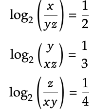
则 \(|log_{2}(x^{4}y^{3}z^{2})|\) 的值为 m/n，其中 \(m\) 和 \(n\) 是互质的正整数。求 \(m+n\)。请逐步推理，并将最终答案放在 □ 内。|Assistant|”
我们的结果：
给定方程组：
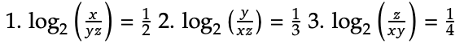
我们将这些对数方程转化为指数形式：
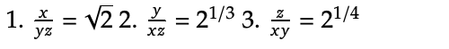
用 \(x\)、\(y\) 和 \(z\) 表示每个变量：
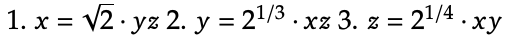
将这些表达式相互代入，得到：
从 \(x = \sqrt{2} \cdot yz\) 和 \(y = 2^{1/3} \cdot xz\)，得到 \(x = \sqrt{2} \cdot (2^{1/3} \cdot xz) \cdot z\)，从而 \(z = 2^{-5/12}\)。将 \(z\) 代入 \(y\) 的方程，得到 \(y = 2^{-3/8}\)。将 \(z\) 和 \(y\) 代入 \(x\) 的方程，得到 \(x = 2^{-7/24}\)。
接下来，我们计算 \(x^{4}y^{3}z^{2}\)：
x4 = (2−7/24)4 = 2−7/6；y3 = (2−3/8)3 = 2−9/8；z2 = (2−5/12)2 = 2−5/6。
将它们相乘：
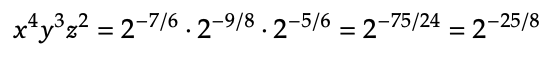
取以 2 为底的对数：
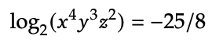
绝对值为：
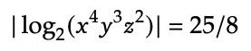
因此，\(m = 25\)，\(n = 8\)，得到 \(m+n = 33\)。
□ 33
基线结果：
给定对数方程组：
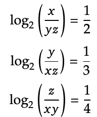
我们将这些方程转化为指数形式：
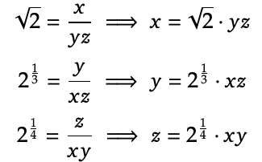
将它们相互代入，得到：
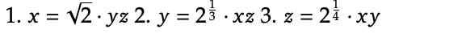
逐步求解这些方程，得到：
z = 2−5/12；xy = 2−2/3；y = 2−1/24；x = 21/24。
然而，检查第三个方程时，我们意识到这个方程组可能没有解。因此，我们使用矩阵求逆求解方程组：
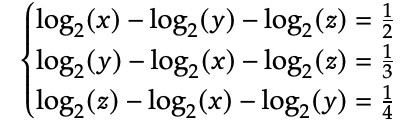
令 \(A = log_{2}(x)\)、\(B = log_{2}(y)\)、\(C = log_{2}(z)\)。方程组变为：
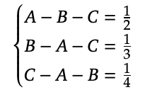
我们使用 Cramer 法则与矩阵求逆求解这个方程组。矩阵的行列式为 −2，解为：
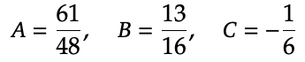
因此，有：
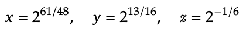
我们需要求 \(|log_{2}(x^{4}y^{3}z^{2})|\)：
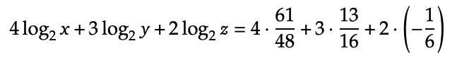
通分为共同分母（48）：
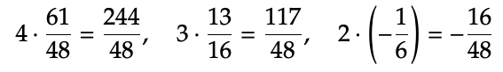
将这些项相加：
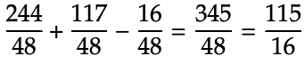
分数 115/16 已经是最简形式，因此 \(m = 115\)，\(n = 16\)。所以，\(m+n = 115+16 = 131\)。
□ 131
提示词：
“|User| 实数 \(x\) 和 \(y\) 满足 \(x,y > 1\)，且 \(log_{x}(y^{x}) = log_{y}(x^{4y}) = 10\)。xy 的值是多少？
请逐步推理，并将最终答案放在 □ 内。|Assistant|”
我们的结果：
给定方程：（接原文第 24 页）
- logx(yx) = 10
- logy(x4y) = 10
我们先对两个方程应用对数幂法则。
对于第一个方程：
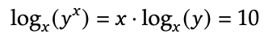
令 \(z = log_{y}(x)\)。那么，\(log_{x}(y) = 1/z\)。代入方程，得到：
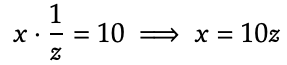
对于第二个方程：
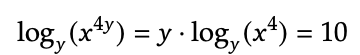
使用幂法则，得到：
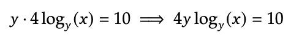
由于 \(log_{y}(x) = z\)，这简化为：
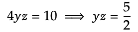
现在，我们有两个表达式：
- x = 10z
- y = (5/2)/z
将 \(x = 10z\) 和 \(y = (5/2)/z\) 代入乘积 xy，得到：
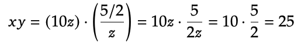
因此，xy 的值为 □ 25。
基线结果：
在给定问题中，实数 \(x\) 和 \(y\) 满足 \(x,y > 1\)，且满足方程 \(log_{x}(y^{x}) = 10\) 和 \(log_{y}(x^{4y}) = 10\)，我们需要求 xy 的值。
首先，我们使用换底公式，将对数方程转化为指数形式。
1. logx(yx) = 10
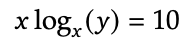
使用换底公式，\(log_{x}(y) = ln y / ln x\)。由于 \(log_{y} x = 9/4\)，得到 \(log_{x} y = 4/9\)。因此，
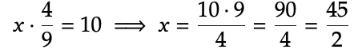
2. logy(x4y) = 10
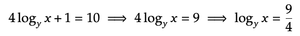
再次使用换底公式，\(log_{x} y = 4/9\)。
接下来，我们用彼此表示 \(x\) 和 \(y\)：
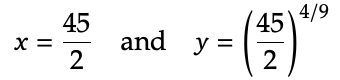
然后计算乘积 xy：
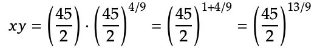
然而，在重新评估，并采用另一种方法，令 \(x = 2^{a}\) 和 \(y = 2^{b}\) 后，我们得到：
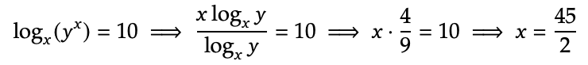
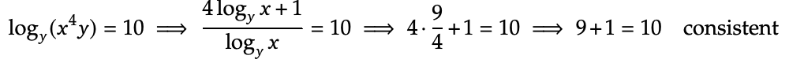
一致。
最后，我们发现乘积 xy 简化为：